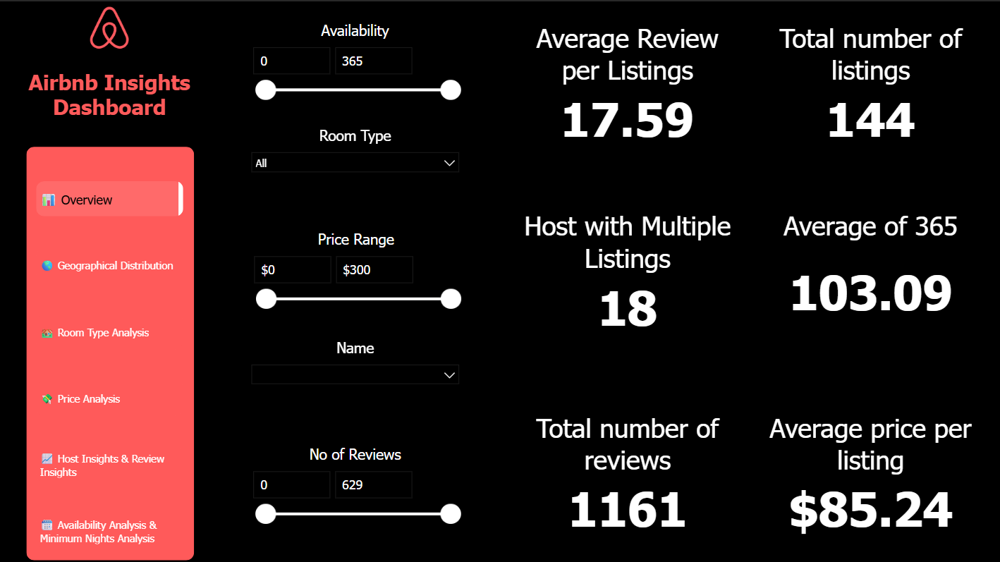
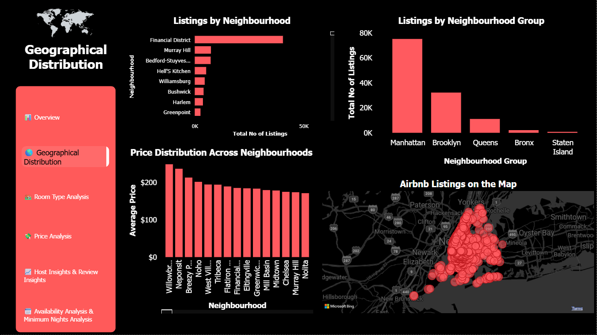
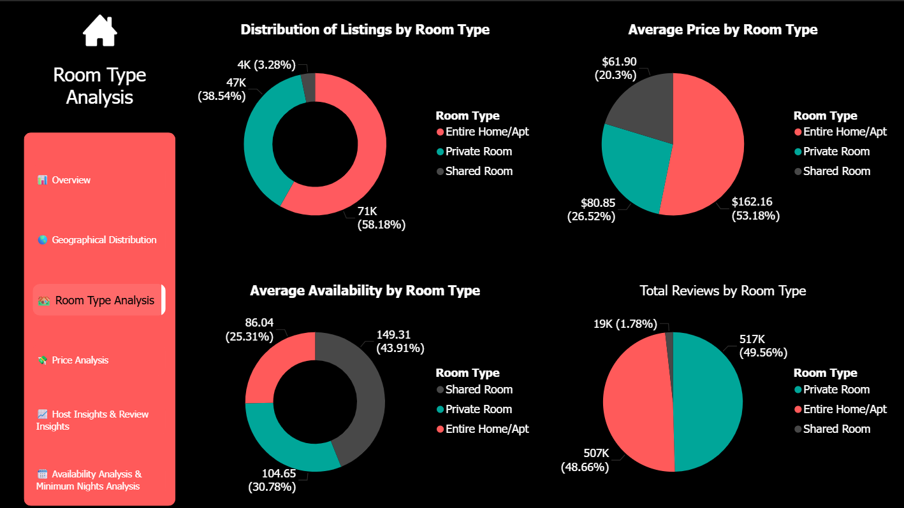
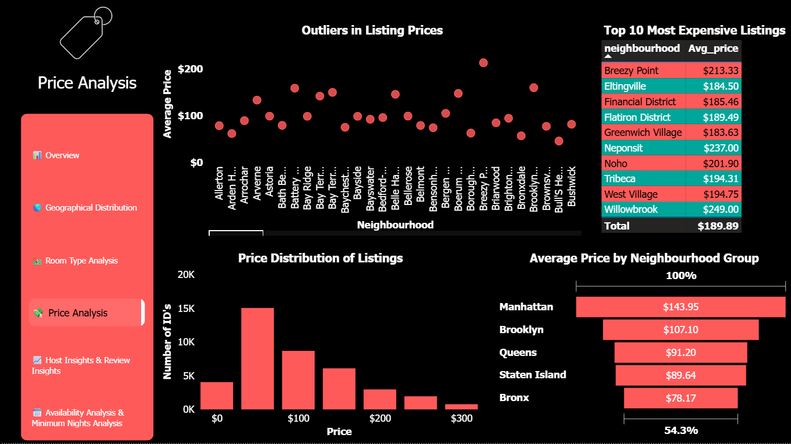
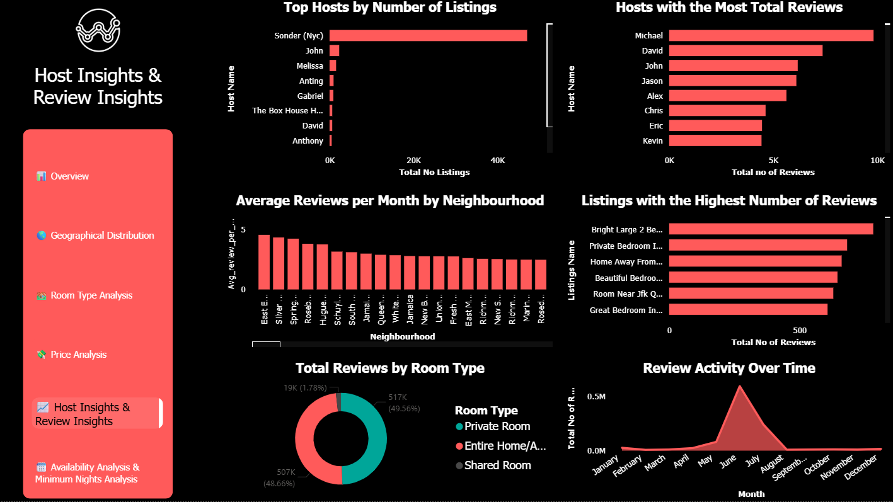
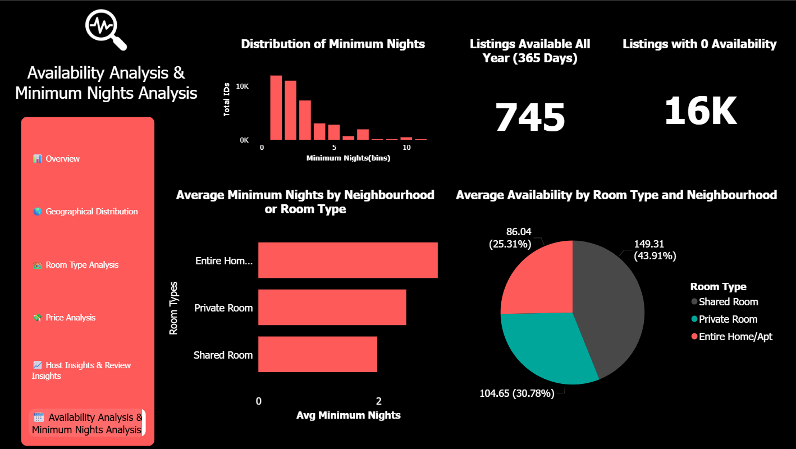

Airbnb NYC 2019 Analysis
Performed data analysis on the Airbnb New York City 2019 dataset to uncover trends in listings, pricing, and customer behavior. Using Python (Pandas) for data cleaning and preprocessing, and Power BI for dashboard creation, I built an interactive visualization highlighting key business insights.
Data Cleaning & Preprocessing (Python – Pandas)
- Handled missing values and removed irrelevant/empty entries.
- Cleaned text columns (removed special characters, trimmed whitespace).
- Converted data types for dates and numeric fields.
- Removed outliers in pricing and minimum nights.
- Standardized categorical data (neighborhoods, room types).
- Filtered invalid geographic coordinates (latitude/longitude).
📉 Final dataset after cleaning → 144 verified listings ready for analysis.
Dashboard Creation & Visualization (Power BI)
- 🌍 Geographic Maps → Distribution of listings across boroughs.
- 📊 Bar/Column Charts → Room type breakdown, pricing trends, review counts.
- 🔢 KPI Cards → Total listings, avg price, busiest review month.
- 🎛️ Slicers/Filters → Explore by borough, room type, price range.
Project Visuals






Key Insights
- Listings after cleaning: 144 entries.
- Borough with most listings: Manhattan (75,000+).
- Highest avg price borough: Willowbrook ($249).
- Most common room type: Entire home/apartment (58.18%).
- Highest avg price by room type: Entire home/apartment → $162.16.
- Most expensive location: Breezy Point ($213.33 avg).
- Review activity peak: June (591,000+ reviews).
Skills Demonstrated
- 🐍 Python (Pandas): Advanced data cleaning & preprocessing.
- 📊 Power BI: Dashboard development & interactive storytelling.
- 🔎 Business Insight Generation: Translating raw data into actionable findings.
- 🌆 Domain Knowledge: Understanding Airbnb trends & urban tourism patterns.
Note: This project demonstrates end-to-end skills — from cleaning messy real-world data to building dashboards and delivering business insights.